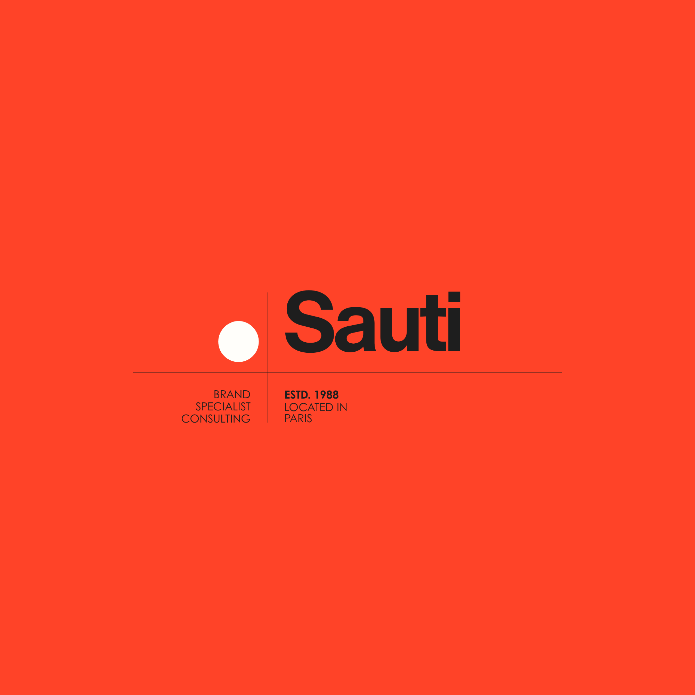

Révéler
Le positionnement, la singularité, le point de vue.
La stratégie rencontre le cinéma.
Nous transformons votre vision en une histoire que l’on voit, ressent et retient.
Une marque forte ne cherche pas seulement à être vue. Elle sait pourquoi elle mérite de l’être.
Un accompagnement pensé comme une œuvre : chaque détail sert l’histoire.
Le positionnement, la singularité, le point de vue.
Une narration claire, une identité cohérente, une direction forte.
Des images, des contenus et des expériences qui laissent une trace.
SAUTI accompagne les marques, les talents et les organisations qui veulent raconter quelque chose de plus grand qu’un produit.
De Paris à Abidjan, nous réunissons stratégie, culture et création pour donner une forme juste aux ambitions.
Découvrir nos collaborations ↗
STRATÉGIE DE MARQUE